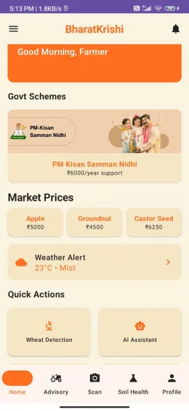
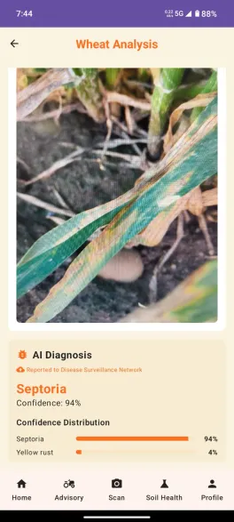
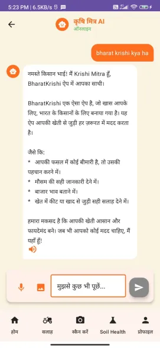
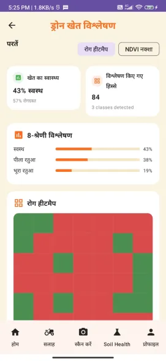
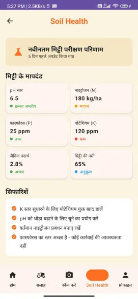
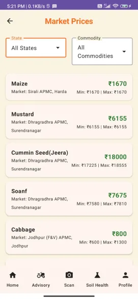
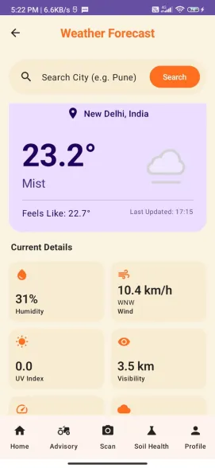
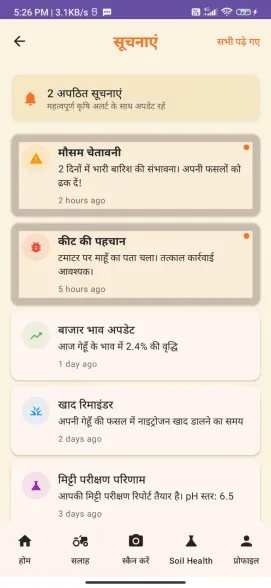
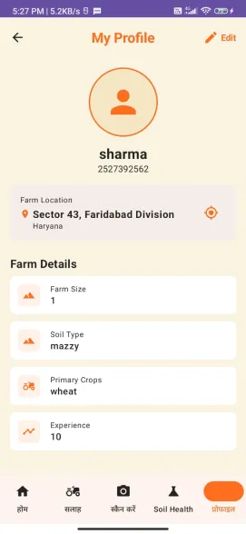

BharatKrishi 🌾
Revolutionizing Agriculture with Offline-First AI
BharatKrishi is a cutting-edge Android application designed to empower farmers with advanced technology,
operating completely offline. We have achieved a global first: a fully functional Wheat Disease
Detection model compressed to just 19MB, utilizing a state-of-the-art MobileViT +
Transformer architecture.
🚀 World's First Innovations
IMPORTANT: 19MB Disease Detection Model
We have successfully engineered a heavy-duty transformer model (MobileViT) to run on mobile devices with a
footprint of only 19MB. This is an industry-first achievement, enabling advanced AI on
low-end devices without internet.
- ⚡ Blazing Fast Performance: Delivers disease diagnosis results in under 1
millisecond.
- 🔌 100% Offline Capability: Detection works anywhere, anytime—no data connection required.
- 🧠 Hybrid Architecture: Combines the spatial precision of CNNs with the global context of
Transformers (MobileViT) for superior accuracy.
📱 Key Features
🔍 AI Wheat Disease Detection
- Instant Diagnosis: Detects 8+ classes of wheat diseases (Yellow Rust, Brown Rust, etc.)
instantly.
- Offline Inference: Powered by ONNX Runtime, ensuring privacy and speed.
- Smart Remediation: Provides immediate, actionable advisory for detected issues.
🤖 KrishiMitra AI Assistant
- Bilingual Support: Chat in Hindi or English.
- Context-Aware: Asks generalized questions about farming, weather, and government schemes.
- Voice-Enabled: Speak to the AI for hands-free interaction.
🚁 Drone Field Analysis
- Full Field Mapping: Generates disease heatmaps and NDVI analysis for entire fields.
- Precision Agriculture: Identifies specific patches needing attention, reducing chemical
usage.
🛠️ Comprehensive Farmer Tools
- 🌤️ Weather Forecasting: Real-time accurate weather updates and alerts.
- 💰 Market Prices (Mandi Bhav): Live crop prices from nearby markets.
- 📜 Government Schemes: One-tap access to latest agricultural subsidies and beneficiary
schemes.
- 🚜 Soil Health: Logs and tracks soil parameters (N-P-K, pH) over time.
🏗️ Project Structure & Tech Stack
Frontend:
- Kotlin & Jetpack Compose: Modern, reactive UI toolkit for building native Android UIs.
- Material 3 Design: Utilizing the latest Google design principles for a premium, accessible
aesthetic.
Machine Learning:
- Framework: PyTorch trained, exported to ONNX.
- Architecture: MobileViT (Mobile Vision Transformer).
- Optimization: Quantized and optimized for mobile edge inference (19MB total).
Backend:
- Firebase: User authentication and real-time database.
- Spring Boot (Microservices): Scalable backend for diverse agricultural data services.
UI/UX Principles:
- Accessibility First: High contrast, large touch targets, and voice support for rural
accessibility.
- Visual Feedback: Skeleton loaders, shimmer effects, and seamless transitions for a premium
feel.
- Localized: Full support for Hindi and English.
👥 Team - Cartel Coders
Institute: Greater Noida Institute of Technology
| Name |
Role |
Focus Areas |
| Aditya Sharma (Team Lead) |
Full Stack + AI/ML |
Android, Web, AI Model Optimization |
| Parmanshu Singh Patel |
Full Stack + ML |
Full Stack Development, ML Training |
| Adarsh Mishra |
Full Stack |
Application Logic, Feature Implementation |
| Piyush Tiwari |
Frontend + Backend |
UI Development, Server-Side Logic |
| Saksham Tyagi |
Database + Microservices |
Schema Design, Service Orchestration |
| Tanisha Malhotra |
System Design + UI/UX |
Architecture, User Experience Design |
📸 Screenshots
| Home Screen |
Wheat Detection |
AI Assistant |
 |

|
 |
More Features
| Drone Analysis |
Soil Health |
Market Prices |

|
 |
 |
| Weather Alerts |
Gov Schemes |
User Profile |
 |
 |
 |